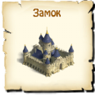

Получено: файл; исходный URL. Исходный файл без перекодирования; авторство не установлено. Страница: источник.
Замок
браузерная версия; платформа и дата редакции не установлены- Тип
- Постройка
- Версия и дата
- браузерная версия; платформа и дата редакции не установлены
Данные по источнику · браузерная версия; платформа не определена · дата редакции не установлена
Предварительно: Автоматическое чтение цифровых пиктограмм и их подписей; знак ? означает нераспознанное количество, подписи могут содержать ошибки источника. Требуется ручная сверка каждой стадии.. Требуется сверка.
- Исходные подписи и цифры в первой колонке
- [Замок] | [Доступен на 15-м уровне] | или открыть | за | 15 | [Зомбаксы] | [Стоимость постройки] | 80000 | [Опыт за каждый этап строительства] | 800 | 100 | 150 | 200 | [Суммарный опыт] | 1250
- Стадии по пиктограммам
- Стадия 1: 50 × Бревна + 100 × Камни + 5 × Цемент Стадия 2: 3 × Скотч + 3 × Супер-клей + 15 × Труба Стадия 3: 3 × Лист золота + 5 × Синяя черепица + 4 × Флюгер
Данные по источнику · Мой Мир (Mail.ru), историческая таблица · дата редакции таблицы не установлена
Предварительно: Текст таблицы Мой Мир. Некоторые обозначения валют и уровней на странице являются изображениями и могут быть потеряны при извлечении. Источники не обязательно независимы.. Требуется сверка.
- Название и данные первой колонки
- Замок 80000 15 ур. или 15
- Опыт, стадии, производство и модернизация
- Опыт: 1250 = 800+100+150+200 Стадии строительства: 50 Брёвна + 100 Камни + 5 Цемент 3 Скотч + 3 Супер-клей + 15 Труба 3 Лист золота + 5 Синяя черепица + 4 Флюгер Создает: 1 Пружина = 1 Проволока + 1 Шестерня 1 Колоннада = 2 Мрамор + 2 Шестерня
Данные по источнику · браузерная версия; платформа не установлена · дата редакции списка не установлена
Предварительно: Прочитан список. Имена файлов пиктограмм приводятся как есть: они не гарантируют идентификацию материала. Alt-атрибуты источника содержат ошибки. Отдельная статья и дата не проверены.. Требуется сверка.
- Сведения из списка, включая имена файлов пиктограмм
- [рисунок: Zamok.png] Доступен с: 15 уровня Стоимость: 80 000 монет Даёт опыта: 1250 (800+100 +150+200) Стадии строительства: 1. 50 [рисунок: Brevna.jpg] +100 [рисунок: Kamni.png] +05 [рисунок: Cement.png] 2. 03 [рисунок: Skotch.png] + 00 3 [рисунок: Super-kley.png] +15 [рисунок: truba.png] 3. 03 [рисунок: List_zolota.png] + 00 5 [рисунок: Sinyaya_cherepica.png] + 0 4 [рисунок: Fluger.png] Производит: 1. 0 1 [рисунок: Prugina.png] = 0 1 [рисунок: Provoloka.png] + 0 1 [рисунок: Shesternya.png] 2. 0 1 [рисунок: Kolonnada.png] = 0 2 [рисунок: Mramor.png] + 0 2 [рисунок: Shesternya.png] 3. 0 1 [рисунок: drova.png] =10 [рисунок: Brevna.jpg] + 0 1 [рисунок: Shesternya.png] 4. 0 1 [рисунок: drova.png] = 0 5 [рисунок: Brevna_pal-my.jpg] + 0 1 [рисунок: Shesternya.png] 5. 0 1 [рисунок: drova.png] = 0 1 [рисунок: Sekvoya.jpg] + 0 1 [рисунок: Shesternya.png]


Данные по источнику · историческая браузерная игра, площадка не указана · 05.05.2012 — дата публикации; дата редакции неизвестна
Предварительно: Сопоставлено по единственному точному названию; различные версии или одноимённые объекты могут различаться. Названия файлов и alt пиктограмм сохранены как подписи, не заменяют проверенную расшифровку; изображения и цены требуют ручной сверки. Независимость от zombi-ferma.ru и других сайтов не установлена.. Требуется сверка.
- Текст и пиктограммы источника
- [изображение: m_castle.png] Доступен с: 15 уровня Стоимость: 80 000 монет Даёт опыта: 1250 (800+100 +150+200) 0 стадия 80 000 монет 1 [изображение: zamok_1.gif] 2 [изображение: zamok_2.gif] 3 [изображение: bez_imeni-4.gif] Производство: 1 Колоннада = 2 Мрамор + 2 Шестерня 1 Дрова = 10 Бревно + 1 Шестерня 1 Дрова = 5 Бревно пальмы + 1 Шестерня 1 Дрова = 3 Секвойя + 1 Шестерня
Связанные сущности
нет проверенных связей — требуется сверка.